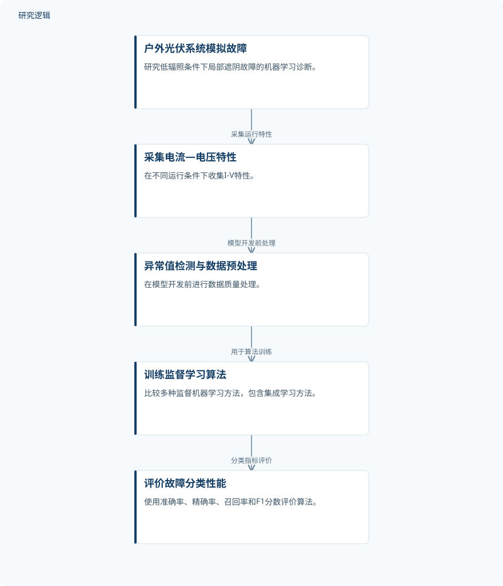

摘要解读
低辐照条件下光伏系统故障诊断的机器学习算法比较研究
Comparative Study of Machine Learning Algorithms for Fault Diagnosis in PV Systems Specifically Under Low Irradiance Conditions
解读更新 2026-10-29 09:35 · 依据公开摘要整理，未核验全文细节
低辐照条件下，光伏系统的正常状态与故障状态更难区分，机器学习还能可靠识别局部遮阴故障吗？这项研究通过户外实验与算法比较，探讨低辐照场景的诊断可行性，以及集成学习的应用潜力。
文章目录
从高辐照走向低辐照诊断
随着光伏系统持续普及，可靠的故障诊断对安全、稳定运行愈发重要。摘要指出，既有机器学习诊断研究多聚焦高辐照环境，而低辐照条件下的有效性仍缺少充分探索。本文将问题具体落在局部遮阴故障上，关注低辐照是否会削弱算法区分正常与故障状态的能力。
以户外伏安特性比较监督学习算法
研究使用户外实验光伏系统模拟故障，并在不同运行条件下采集电流—电压（I-V）特性。模型开发前进行了异常值检测与数据预处理，随后训练、评估多种监督机器学习算法。评价指标包括准确率、精确率、召回率和F1分数；摘要未列出具体算法名称与处理流程细节。
依据摘要整理的低辐照故障诊断流程


仅概括摘要明确陈述的实验、数据处理与算法评价关系，不代表论文原图，也不补充未报告的实验配置。
下载 SVG图示关系说明
实线表示相邻阶段的信息流，虚线表示跨阶段联系或反馈。
户外光伏系统模拟故障 → 采集电流—电压特性：采集运行特性；采集电流—电压特性 → 异常值检测与数据预处理：模型开发前处理；异常值检测与数据预处理 → 训练监督学习算法：用于算法训练；训练监督学习算法 → 评价故障分类性能：分类指标评价
诊断性能下降，但集成学习表现更稳健
摘要报告，低辐照条件下，正常与故障运行状态之间的差异变得不够明显，故障诊断因此更具挑战。与常规辐照条件相比，所有受评算法的性能均呈下降趋势，但可靠的故障检测仍然可行。这里的核心结果不是低辐照不影响诊断，而是性能受损后仍保有识别能力。
在本研究比较的方法中，集成学习相较常规分类算法表现更优，也更稳健。作者据此指出，集成学习在太阳辐照有限地区的实际故障检测中具有潜力。摘要没有提供具体指标数值，因此目前不能量化其领先幅度，也不能把应用潜力理解为已经完成现场部署验证。
摘要尚不足以界定适用范围
仅凭本次摘要，无法判断样本规模、各运行状态的数据分布、低辐照的具体界定，以及训练与测试数据如何划分。算法名单、比较配置和指标数值同样未被报告，因此不足以判断性能差异的大小及比较是否充分。
摘要也未交代跨时间、跨系统或跨地点的验证范围，不能据此推断对其他故障类型的适用性。这些属于当前资料无法确认的信息，并不意味着论文没有开展相关工作；本文解读也仅限于所提供的完整摘要。
阅读启发：关注低辐照下的比较边界
阅读启发：对光伏智能运维而言，值得关注的不只是哪个算法排名靠前，还包括低辐照如何改变正常与故障状态的可区分性。进一步阅读时，可重点核对辐照条件的定义、集成学习优势对应的评价指标，以及“可靠检测”所依赖的验证范围，从而判断结果与实际运维场景的关联。
以上为本站阅读启发与建议，不是论文已验证的结论。